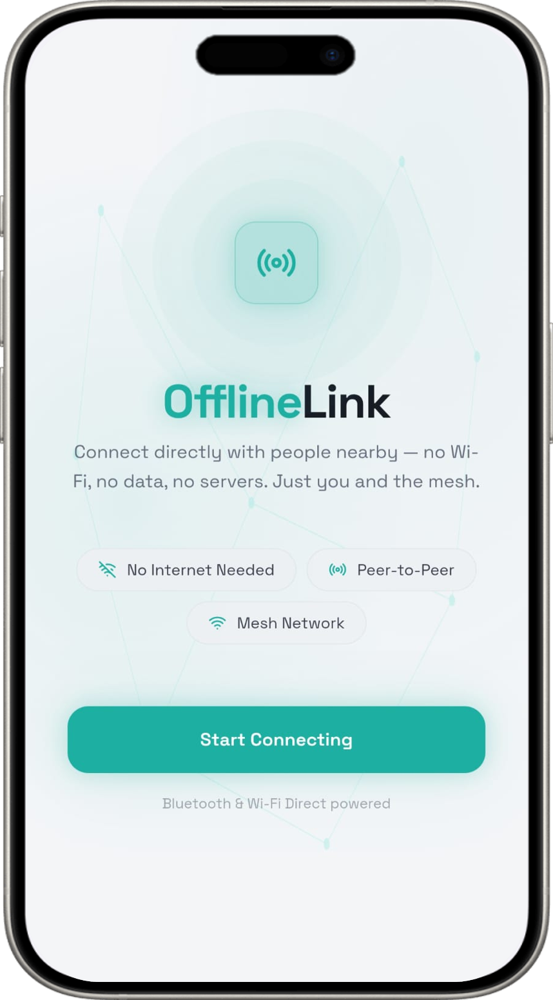
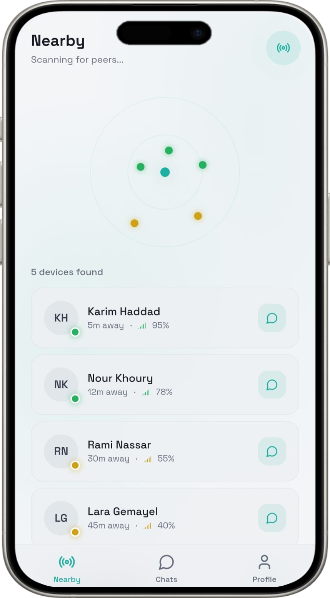
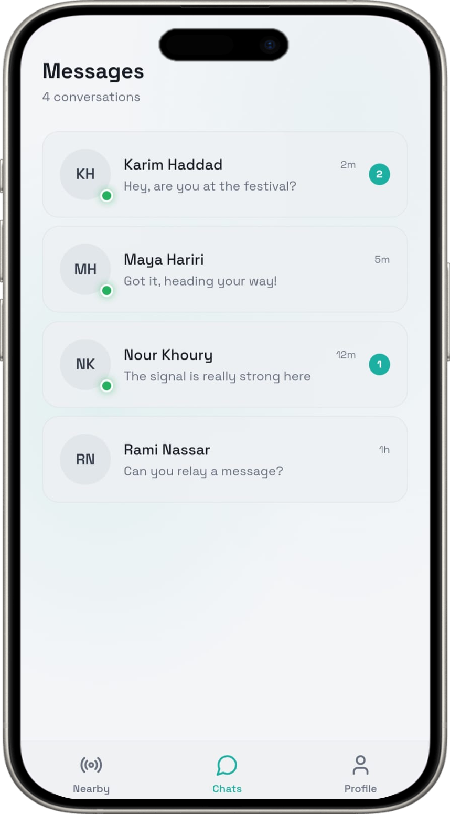
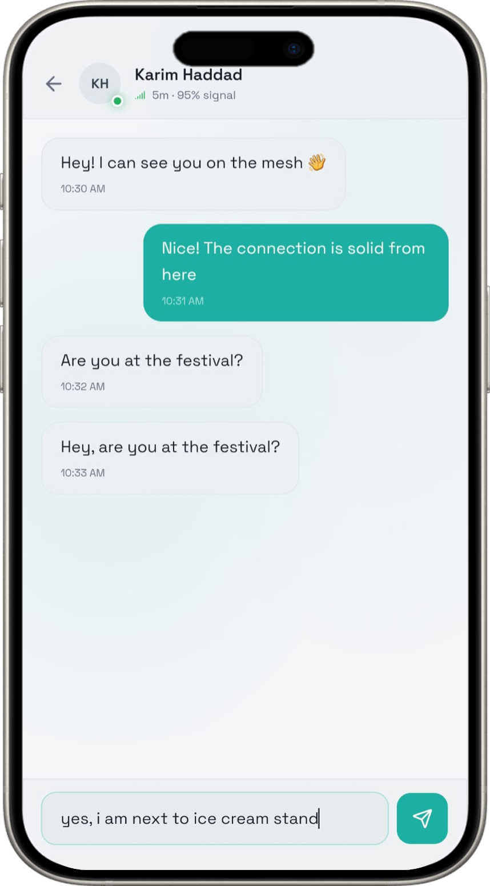

Stay connected, always !
Imagine reaching for your phone during an emergency, only to be cut off from help:
No Wi-Fi, No mobile data, No signal !
Every year, millions of people are trapped in this exact situation, and in these moments:
Every second counts. Every message matters and Every failure can cost lives !
This raises a simple question:
“Why should communication rely on infrastructure ?”
OfflineLink application removes that dependency and let people communicate:
Without internet, Without limits !
OfflineLink’s Features
Offline Messaging
Stay connected and exchange messages even when there is no internet connection.
File Sharing
Share important files and documents directly with nearby users.
Location Sharing
Share your location with connected users when you need to stay in contact.
Automatic Sync
Sync and keep your data updated when connected.
OfflineLink's Experience

Open

Scan

Connect

Chat
Take Action Now
Grab your phone, install OfflineLink, and communicate wherever you are !